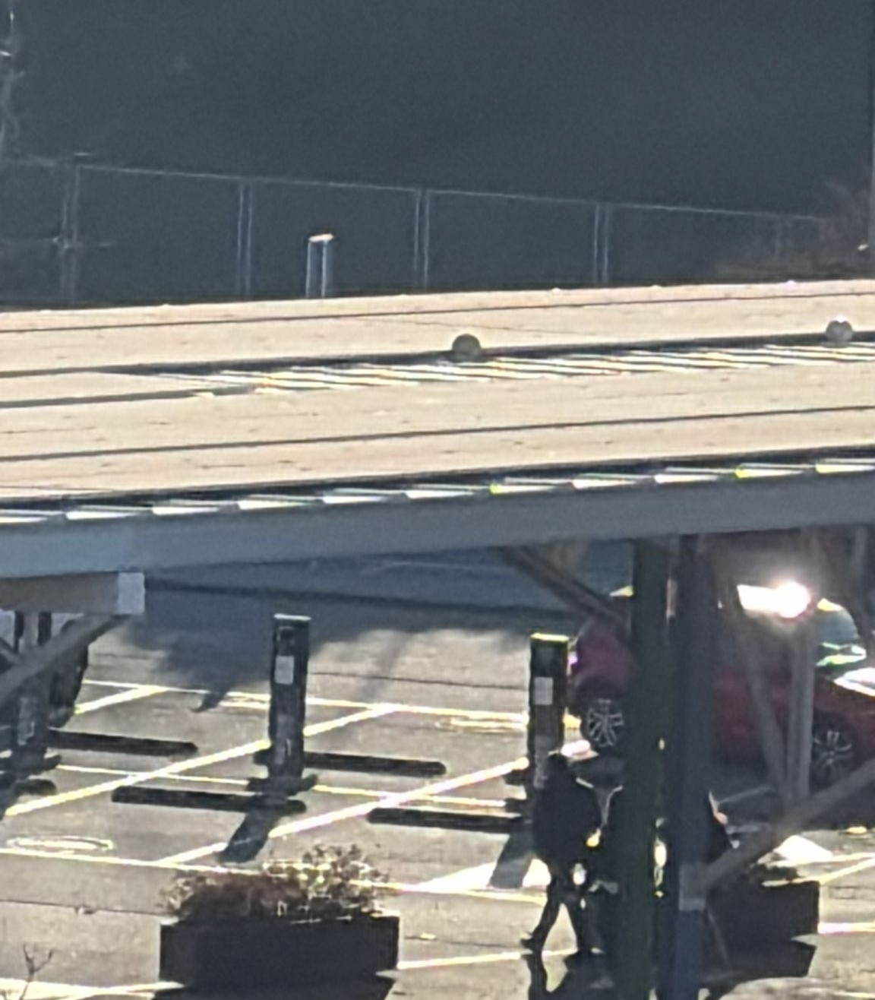
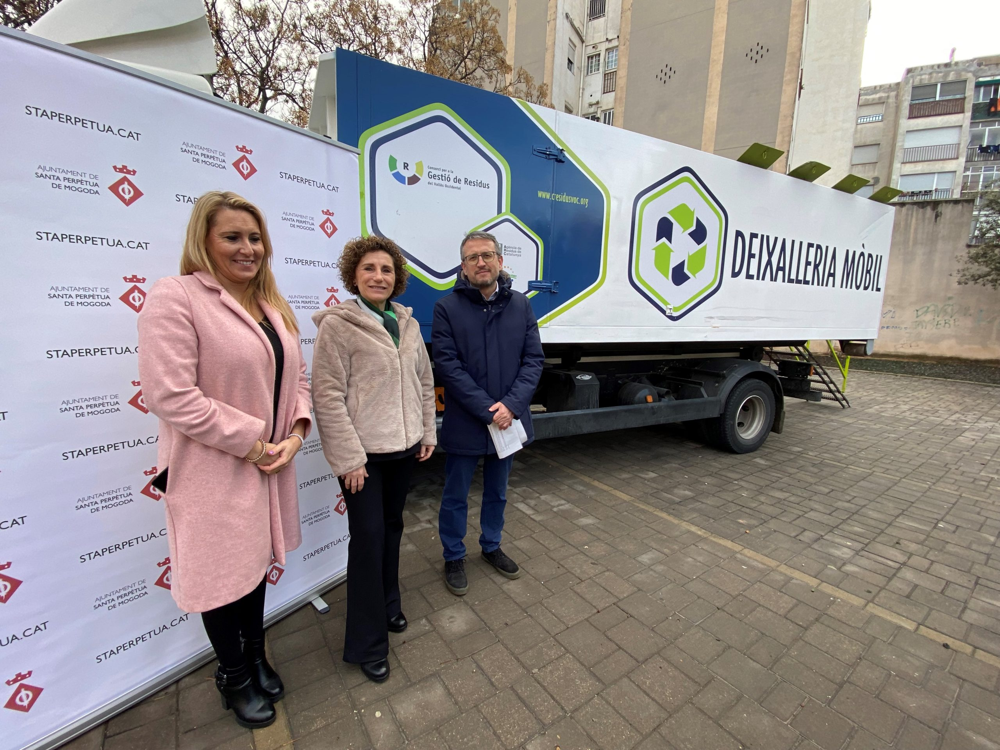
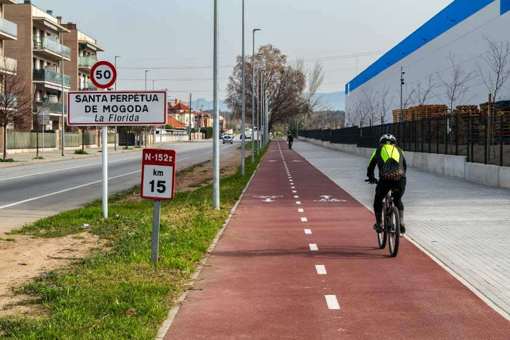
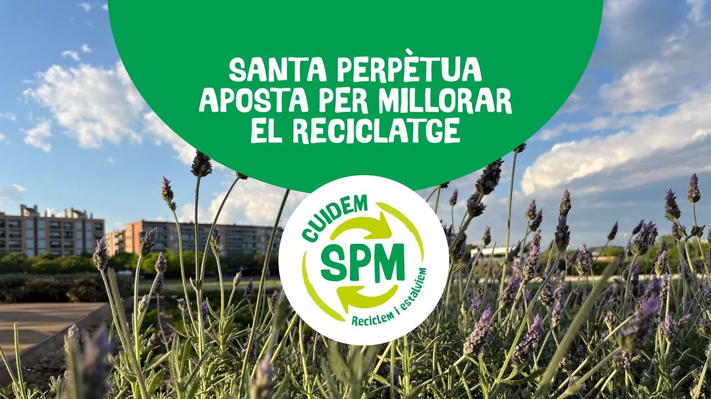

Energía Solar
Instalación de paneles en edificios públicos para reducir el gasto energético.

Reciclaje
Mejora de la recogida selectiva y nuevos puntos limpios en el municipio.

Movilidad
Nuevos carriles bici para conectar el centro con la estación de tren.

Educación Ambiental
Fomentamos hábitos sostenibles y el uso responsable de la movilidad urbana.

Reducir Impacto Ambiental
Impulsamos la bicicleta para disminuir emisiones y tráfico urbano.